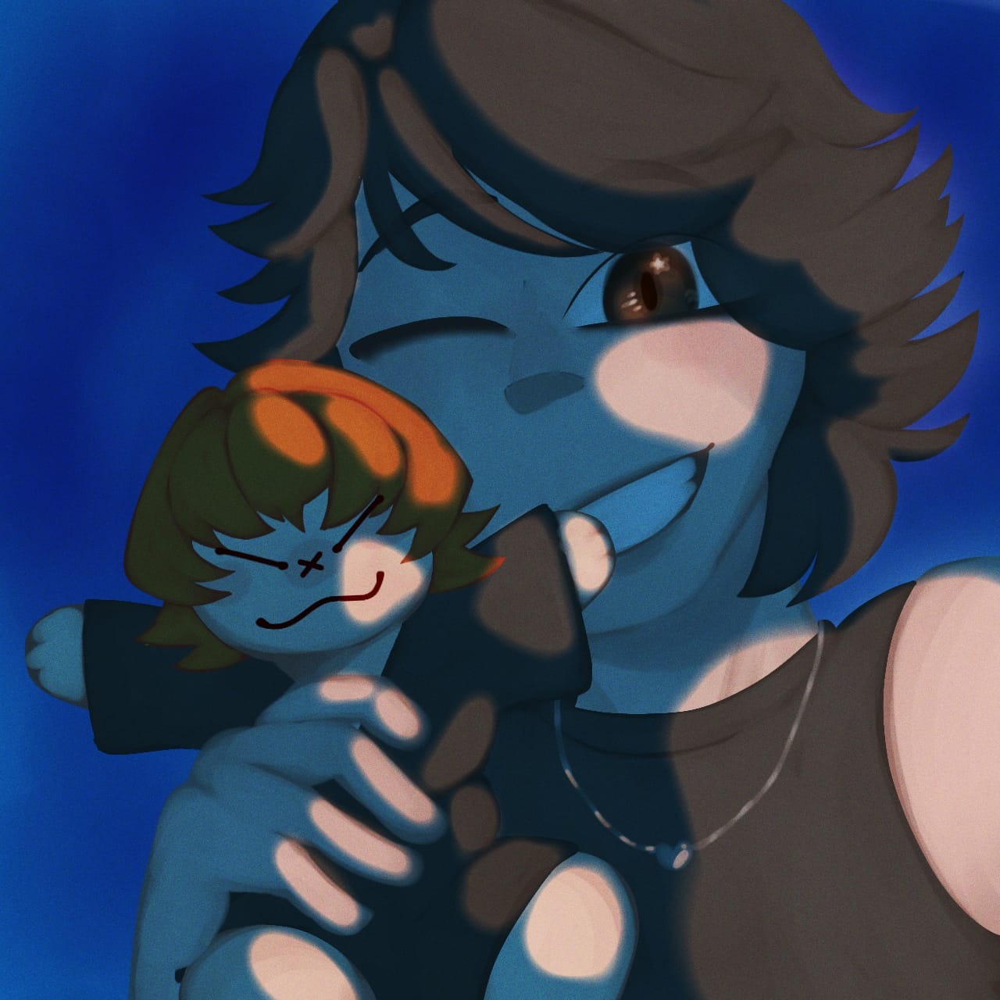
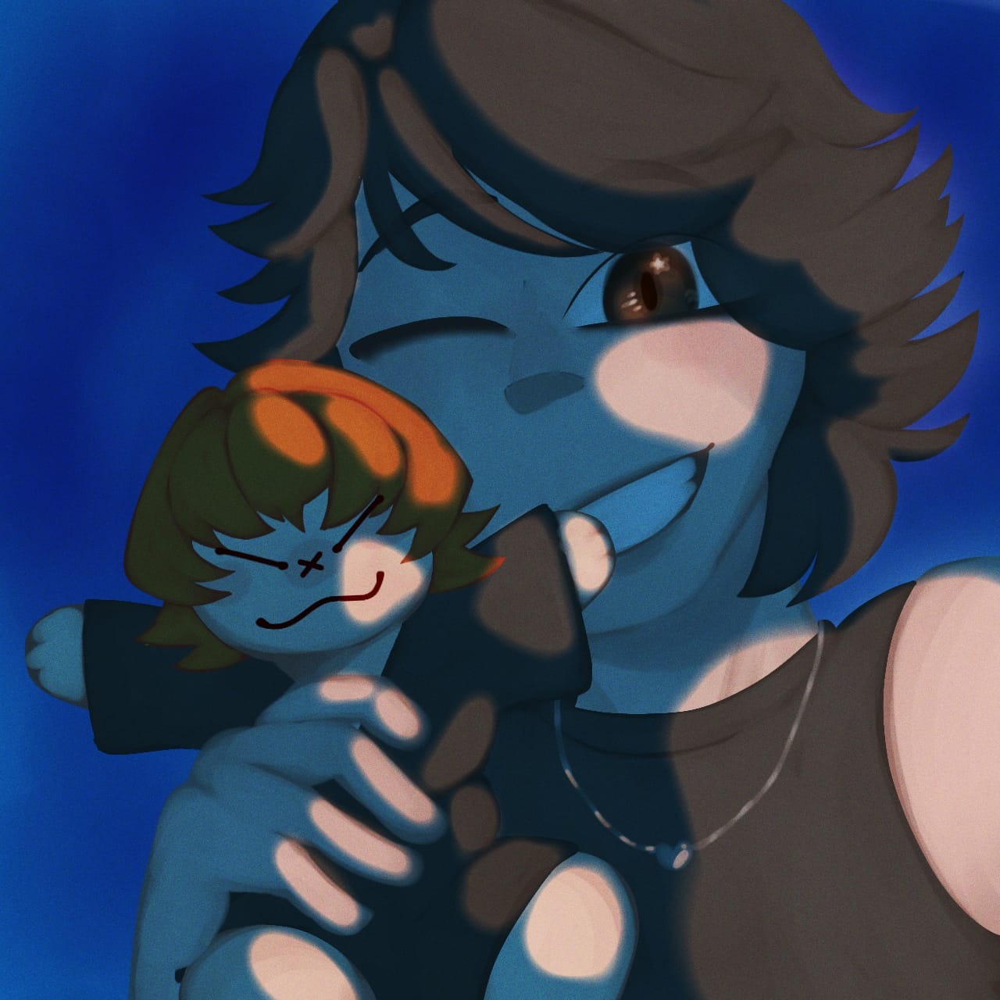

¡Holii, soy Ray!
Ilustradora digital y estudiante de Ingeniería civil informática
Sobre mí
Soy una estudiante con intereses en la programación/desarrollo web y la ilustración digital! Mi gusto por la ilustración digital comenzó desde pequeña, pasandomela viendo series o peliculas animadas, inspirada inicialmente por el anime, series indie baratas como fnafhs, y actualmente más valoradas como Glitch studio, Studio Ghilbi, Dreamworks y Pixar. juegos como Sonic, Five nights at Freddy's o otros más frikis.
Habilidades
Texto...
Contacto
Texto...